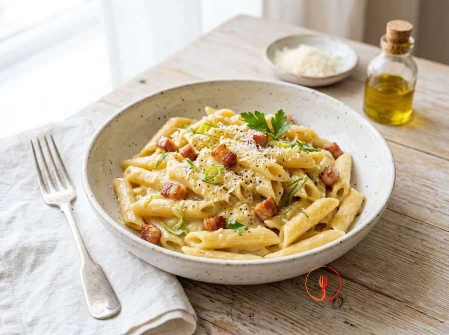

Penne con Crema di Porri e Pancetta Dolce
I porri diventano una crema vellutata che avvolge la pasta, contrastata dalla croccantezza della pancetta. Un primo piatto gourmet realizzato con ingredienti del quotidiano.
Un primo piatto cremoso dove la dolcezza dei porri stufati incontra la croccantezza saporita della pancetta. Il Parmigiano Reggiano completa il piatto legando gli ingredienti in una salsa vellutata e avvolgente.
Ingredienti
- Penne rigate320 g
- Porri (solo parte bianca)300 g
- Pancetta dolce a cubetti80 g
- Parmigiano Reggiano grattugiato30 g
- Olio extravergine d'oliva20 ml
- Acqua di cottura della pasta100 ml
- Sale e pepeq.b.
Allergeni
Glutine, Latte
Procedimento
- Inizia dalla pulizia dei 300g di porri, selezionando esclusivamente la parte bianca e quella verde chiarissima che risultano più tenere. Tagliali longitudinalmente per sciacquare accuratamente ogni residuo di terra tra le fibre, poi riducili a rondelle sottilissime con un coltello ben affilato. Cerca di ottenere uno spessore uniforme di circa 2 millimetri per garantire che appassiscano in modo omogeneo. Otterrai un trito profumato, pulito e pronto per la base aromatica. Il consiglio dello chef: non buttare le foglie verdi scure, sono ottime per insaporire un brodo vegetale.
- Prendi una padella capiente, versa i 20ml di olio extravergine d'oliva e aggiungi i porri affettati con un pizzico di sale. Lasciali stufare dolcemente a fuoco medio-basso per circa 10 minuti, mescolando spesso con un cucchiaio di legno affinché non prendano colore. Se vedi che si asciugano troppo, aggiungi un cucchiaio di acqua tiepida per mantenere l'umidità necessaria. A fine cottura, i porri dovranno risultare completamente trasparenti, teneri e quasi burrosi al tatto. Il consiglio dello chef: la cottura lenta evita che il porro diventi amaro, sprigionando invece tutta la sua naturale dolcezza.
- Trasferisci i porri cotti nel bicchiere di un mixer a immersione e aggiungi circa 50ml di acqua calda. Frulla alla massima velocità fino a ottenere una crema perfettamente liscia, densa e dal colore verde pallido. Se la consistenza ti sembra troppo fibrosa, passa la crema attraverso un colino a maglie strette per renderla vellutata come una mousse. Assaggia per regolare di sale, considerando che la pancetta e il parmigiano daranno sapidità in seguito. Il consiglio dello chef: frulla i porri mentre sono ancora caldi per favorire la rottura delle fibre e ottenere un'emulsione più stabile.
- Nella stessa padella utilizzata per i porri, precedentemente pulita con carta assorbente, adagia gli 80g di pancetta dolce a cubetti senza aggiungere altri grassi. Accendi il fuoco a intensità media e lascia che il grasso della pancetta si sciolga lentamente, rendendo la carne dorata e croccante in circa 5-6 minuti. Mescola di tanto in tanto per una rosolatura uniforme, evitando di bruciare i bordi. Il risultato dovrà essere una pancetta vivace, croccante fuori e tenera dentro, immersa nel suo stesso fondo saporito. Il consiglio dello chef: parti sempre dalla padella fredda per permettere al grasso della pancetta di sciogliersi gradualmente.
- Porta a bollore una pentola capiente con abbondante acqua salata (usa circa 1 litro d'acqua ogni 100g di pasta). Tuffa i 320g di penne rigate e impostate il timer: dovrai scolarle circa 2 minuti prima del tempo indicato sulla confezione per terminare la cottura in padella. Mescola subito per evitare che la pasta si attacchi al fondo e mantieni il bollore costante ma non troppo irruento. Le penne dovranno risultare molto al dente, con il cuore ancora leggermente resistente. Il consiglio dello chef: non aggiungere olio nell'acqua della pasta, poiché impedirebbe al condimento di aderire correttamente alla superficie delle penne.
- Mentre la pasta cuoce, unisci la crema di porri nella padella con la pancetta croccante, accendendo la fiamma al minimo per amalgamare i sapori. Aggiungi un mestolo di acqua di cottura della pasta (circa 50ml) alla crema per renderla più fluida e pronta ad accogliere le penne. Mescola con una spatola finché non otterrai un condimento omogeneo e leggermente spumoso. Il profumo del porro stufato si sposerà con la nota affumicata e sapida della pancetta. Il consiglio dello chef: tieni sempre una tazza di acqua di cottura da parte prima di scolare la pasta, ti servirà per la mantecatura finale.
- Scola le penne direttamente nella padella con il condimento, alzando leggermente la fiamma a intensità media. Salta la pasta energicamente per un minuto, aggiungendo gradualmente il resto dell'acqua di cottura se necessario, affinché l'amido residuo crei un legame perfetto con la crema di porri. Aggiungi ora i 30g di Parmigiano Reggiano grattugiato a pioggia, continuando a mescolare finché non si sarà sciolto completamente. Il risultato deve essere una pasta lucida, avvolta da una salsa vellutata che entra perfettamente nelle rigature delle penne. Il consiglio dello chef: effettua questo passaggio a fuoco spento se preferisci una crema più fluida e meno rappresa.
- Spegni il fuoco e impiatta immediatamente le penne in piatti fondi o cappelli del prete precedentemente riscaldati. Completa ogni porzione con una generosa macinata di pepe nero fresco, che donerà una nota speziata e pungente in contrasto con la dolcezza dei porri. Assicurati che ogni piatto contenga una distribuzione equa di cubetti di pancetta croccante per garantire la giusta consistenza a ogni boccone. Servi la pasta fumante, godendoti il contrasto tra la cremosità del fondo e la tenacia della pasta. Il consiglio dello chef: un giro d'olio a crudo finale esalterà ulteriormente gli aromi naturali degli ingredienti.
Consigli
- Inizia a rosolare la pancetta in una padella fredda per far sciogliere il grasso lentamente e renderla croccante.
- Frulla i porri aggiungendo l'acqua di cottura poco alla volta fino a ottenere la cremosità desiderata.
- Utilizza solo la parte bianca e quella verde chiaro dei porri per garantire un gusto più dolce e delicato.
Varianti
- Sostituisci la pancetta dolce con della pancetta affumicata per un contrasto di sapori più deciso e intenso.
- Usa della granella di nocciole tostate al posto del formaggio per aggiungere una nota croccante e tostata.
Valori nutrizionali (stima)
| Per porzione (265 g) | Per 100 g | |
|---|---|---|
| Energia | 1916 kJ / 458 kcal | 723 kJ / 173 kcal |
| Proteine | 17.3 g | 6.5 g |
| Carboidrati | 66.8 g | 25.2 g |
| di cui zuccheri | 2.9 g | 1.1 g |
| Grassi | 13.6 g | 5.1 g |
| di cui saturi | 4.9 g | 1.8 g |
| Fibre | 2.6 g | 1.0 g |
| Sale | 1.9 g | 0.7 g |
Valori stimati con l'AI su dati medi CREA / USDA: sono indicativi e non sostituiscono il parere di un medico o di un nutrizionista.
Apri la ricetta nell'app per la lista della spesa, le schede ingredienti e i negozi vicini.